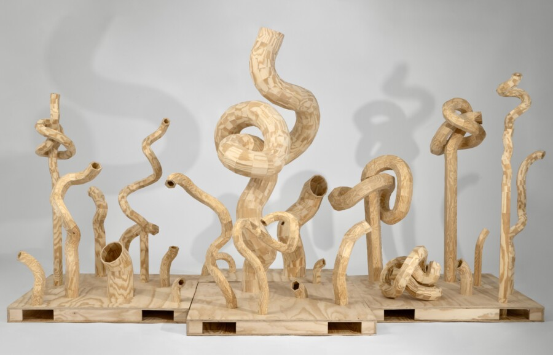

Artist Talk with Misa Yo
The artist will be present to discuss and answer questions about THE SHAPE OF MANY, a solo exhibition which brings together small, repeated gestures that build into larger sculptural installation.
About the Exhbition:
The Shape of Many explores how repetition transforms into form, questioning when accumulation is perceived as unity and when labor becomes invisible. Working across bronze, wood, glass, and ceramics, the exhibition brings together small, repeated gestures that build into larger sculptural installations
Individual units merge into cohesive structures, where traces of making remain embedded but not immediately apparent. Bronze surfaces record touch through natural patination, while wood and clay extend into continuous, line-like forms that shift between drawing and structure in space.
By allowing labor to recede beneath the surface, the work invites a slower encounter, where perception evolves over time. The exhibition also reflects on material histories and the presence of women within physically and traditionally male dominated practices. Through subtle, tactile experiences, The Shape of Many encourages viewers to reconsider how value, effort, and form are recognized and understood.
Exhibition dates: May 1-29, 2026
Gallery hours: Thurs – Fri 2-6pm, Sat – Sun 12-4 pm
This program is supported by a grant from the Athena Fund.